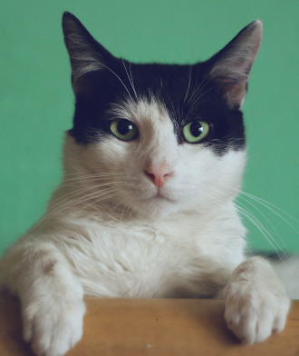

Meet Our Friends
Show me:
Barksalot
Barksalot is a sweet and lovable 3 year old ball of fluff. He loves carrots, celery, and playing fetch.
2 Years Old

Meowssalot
Meowsalot is the most talkative cat we’ve ever come across. Constant meowing, chirping and purring!
1 Year Old

Woof
Woof is a very talkative and sweet pup. She loves beets, plums, cuddles and jumping over low fences.
Less than a year old

Purrsloud
Purrsloud has the loudest and most relaxing purr that’s come through our center. Come hear it yourself.
4 Years Old